This lab explain how to continue sequential 3D operation after converting 2D objects to 3D using 2D to 3D convertor.
Click on the  button next to 3D Forming under Forming operations list from Explorer tab as shown in Fig. STPL1.1.
button next to 3D Forming under Forming operations list from Explorer tab as shown in Fig. STPL1.1.
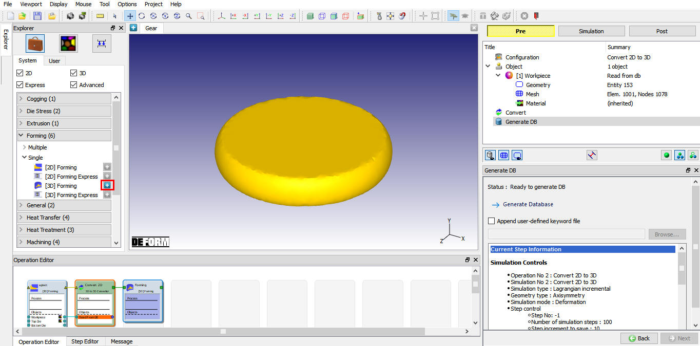
Adding 3D forming operation after 2D to 3D convertor
Open the 3D forming operation from operation editor by clicking on it and select the
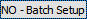
button for Setup type popup (See Fig. STPL1.2.) to setup the problem in batch mode.
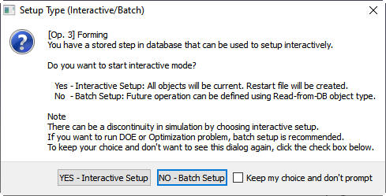
Setup type popup for 3rd operation 3D Forming
Rename the 3D forming operation to Forge by clicking on title Forming in operation editor 3D forming operation and press Enter keyboard button to apply. Click  .
.
In Simulation controls, uncheck the Heat transfer mode from simulation control main tab as this is an isothermal simulation. Click  until
Objects page.
until
Objects page.
Continue setup by adding three objects to make the place holders for a workpiece and a top and bottom die required in this operation.
Click  to start defining the workpiece object.
to start defining the workpiece object.
Select the workpiece object type as read from DB as shown in Fig. STPL1.3. Read from DB object will read the all object data from previous operation last step, so it reads the converted 3D object data.
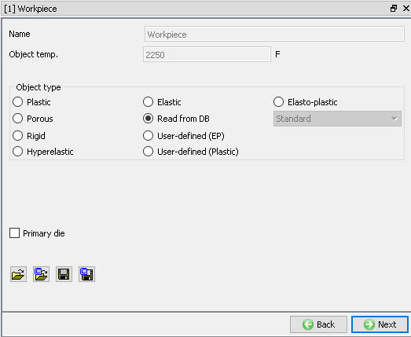
Workpiece object window for 3D forge operation
Click  to change workpiece mesh settings.
to change workpiece mesh settings.
Check the Define mesh settings check box to change the mesh settings. Define the size ratio as 2 and then select the Absolute type as shown in Fig. STPL1.4. This defines the target number of elements by defining the smallest element size and a size ratio. The number of elements will increase as the complexity of the geometry increases.
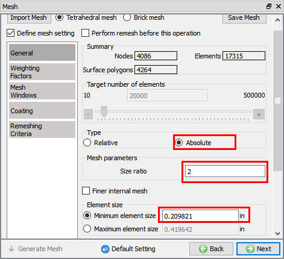
Expert mode general mesh settings for Read from DB object
Select the Remesh tab and change the interference depth to 0.7 Relative. (See Fig. STPL1.5.)
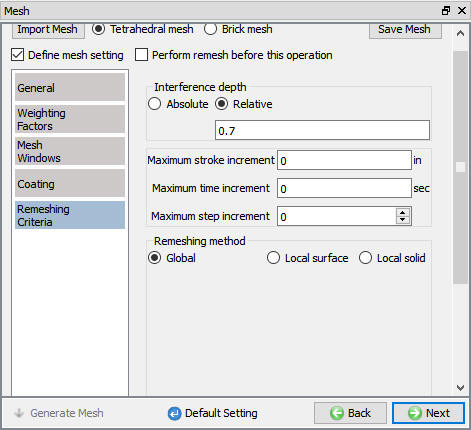
Expert mode remesh criteria settings for Read from DB object
As data like material, boundary conditions are inherited from previous operation, no need to change these data. Select Property under workpiece in operation tree to set the target volume.
In Deformation Property tab check Redefine: Target volume and assign Target Volume as Active in FEM only. This is the setting that should be used for most forging simulations. Click the (Calculate Volume) button, then click to accept the recommended volume. Note that it may differ slightly from the value shown in Fig. STPL1.6.
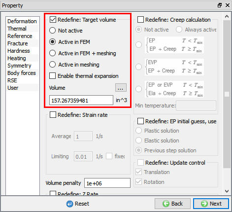
Target volume definition in deformation property window
Click on Geometry under Top die in operation tree to continue with top die definition.
Import the geometry “gear_top_die_ENG.STL”. Click the  (Load geometry from library) button and (import) the file “gear_top_die_ENG.STL”. The geometry for billet is located in DEFORM installation folder \3D\Labs directory.
(Load geometry from library) button and (import) the file “gear_top_die_ENG.STL”. The geometry for billet is located in DEFORM installation folder \3D\Labs directory.
Check the geometry using button and confirm that invalid edges and orientation, small area's and No. of free edges are 0 and No. of surfaces is 1 from result as shown in Fig. STPL1.7. This tells the geometry is clean, so click Movement under top die in operation tree to set top die movement controls.
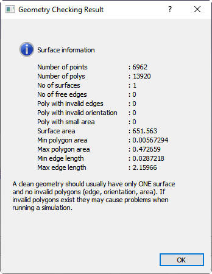
Top die geometry checking result
In Movement window set movement of constant speed as 3 in/sec in the –Y direction as shown in Fig. STPL1.8.
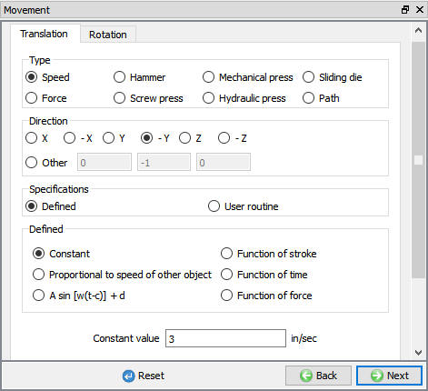
Top die movement window
Click on Geometry under bottom die in operation tree to define bottom die.
Import “gear_bottom_die_ENG.STL” for the bottom die (object 3) from library. Check the geometry using  button and confirm
that geometry is clean as explained in 3.6. Top die definition.
button and confirm
that geometry is clean as explained in 3.6. Top die definition.
Click on Scheduled Positioning under Controls in operation tree to position the objects.
After importing new dies, they may not be in the correct position. So use Interference positioning to move the Top Die in the –Y direction until it touches the Workpiece and the Bottom Die in the +Y direction until it touches the workpiece. As the workpiece is read from DB object, this can not be position in this operation hence it must be scheduled so as to be positioned during running.
Click on  (Add) button and schedule position the Top die by interference in -Y direction with respect to workpiece as
shown in Fig. STPL1.9. Click
(Add) button and schedule position the Top die by interference in -Y direction with respect to workpiece as
shown in Fig. STPL1.9. Click  to close the definition.
to close the definition.
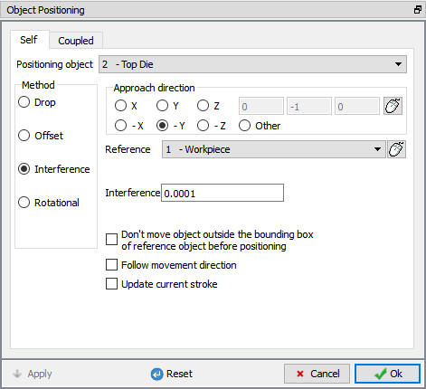
Top die scheduled positioning settings
Similarly position the bottom die by interference in +Y direction with respect to workpiece using  (Add)
button. After adding the scheduled positioning window list the added scheduled position details are displayed as shown in Fig. STPL1.10.
(Add)
button. After adding the scheduled positioning window list the added scheduled position details are displayed as shown in Fig. STPL1.10.
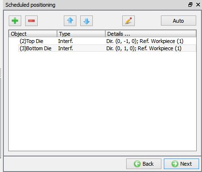
Scheduled positioned details for forge operation
Click  to the Contact page.
to the Contact page.
Assign the default inter-object relationships using  button. The workpiece should be slave to both the top and bottom die. For 3D simulations, self-contact (workpiece
master to itself) is generally not used because it can significantly increase simulation time. Other tools are available to track folding. These will be discussed in a later lab.
button. The workpiece should be slave to both the top and bottom die. For 3D simulations, self-contact (workpiece
master to itself) is generally not used because it can significantly increase simulation time. Other tools are available to track folding. These will be discussed in a later lab.
Click on the  button for one of the relationships. Under the Friction
button for one of the relationships. Under the Friction  Value box,
use the Constant drop down menu to select Hot forging (lubricated) 0.3. Click
Value box,
use the Constant drop down menu to select Hot forging (lubricated) 0.3. Click  to exit the menu. Click
to exit the menu. Click  to apply the friction value to the two other relationships. As the object workpiece added in relation is read from DB object inter-object can not be generated now as in lab1, so confirm that Scheduled Initialize and Generate contact check boxes
are checked as shown in Fig. STPL1.11. this will initialize previous contacts and generate new contacts while running the
simulation.
to apply the friction value to the two other relationships. As the object workpiece added in relation is read from DB object inter-object can not be generated now as in lab1, so confirm that Scheduled Initialize and Generate contact check boxes
are checked as shown in Fig. STPL1.11. this will initialize previous contacts and generate new contacts while running the
simulation.
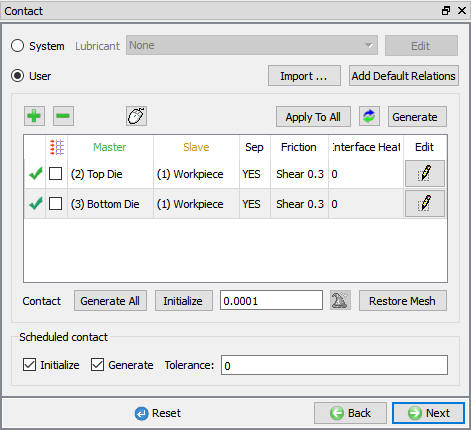
Scheduled Inter-object contact generation settings
Click  to add stopping controls.
to add stopping controls.
In Guided mode, stopping criterion can be established for the flash thickness by checking the Distance between objects check box. This selection activates mouse picking, allowing you to pick two reference points. Select the reference points on the flash land. Slice the objects using
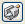
(Slicing) icon along +Z direction to the point (0,0,0.001) and then select icon before picking the points on flash thickness as shown in Fig. STPL1.12.
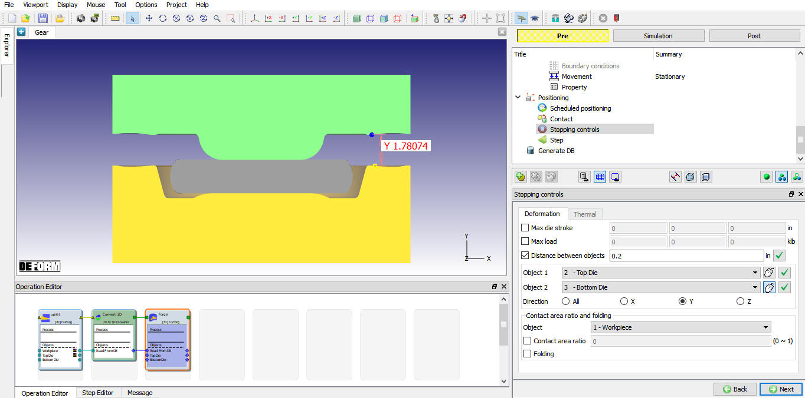
Distance between dies stopping controls definition
In this case it is important to pick the inside of the flash land. Select Direction Y to use the Y distance then enter 0.2 inches in the Die Distance between objects data field. You can visit the slicing menu again to remove the slice.
Click  to define simulation controls.
to define simulation controls.
Select the (Switch to expert mode) icon (from header tool bar) to access advanced simulation controls settings. Observe that Operation Number is automatically updated to 3 as shown in Fig. STPL1.13.
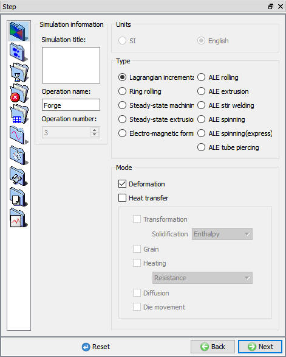
Simulation Step control main tab
Go to the Step increment tab. Determine the appropriate Die displacement per step (DSMAX) and the Number of Simulation Steps that you will need to close the tools. Measure the distance between the top and bottom dies using (Measurement tool) icon. When using the measure tool you can right click on the main display to select CAD Style. This will provide a measurement in a defined axis direction (X, Y or Z). Right click on the display again to select the desired axis. The Y distance between the tools is ~1.9 inches. This forging operation should take ~100 steps. Divide the total distance (1.9) by the number of steps to get a die displacement of 0.019. (See Fig. STPL1.14.)
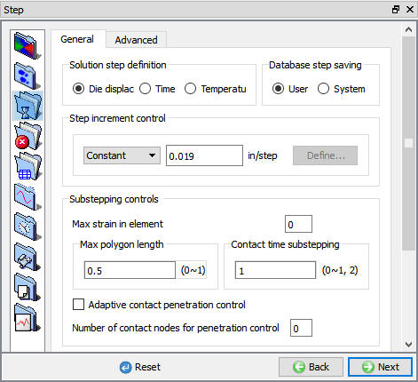
Step increment definition for top die
Select the Steps increment tab to define the 100 as number of steps and to save every 5 steps.
Click  to generate database.
to generate database.
Click on the  button and observe the data review information in message file. Confirm that database check don't have any problem. So click on the
button and observe the data review information in message file. Confirm that database check don't have any problem. So click on the  button to generate database and look for Database has been generated message.
button to generate database and look for Database has been generated message.
Click on the  Mode button (above the operation tree) to start the simulation.
Mode button (above the operation tree) to start the simulation.
Click on the  action label to open the Run Options dialog as shown in Fig. L3.15. Use
the default Continue Run option to select “Continue from the last step” option and then select the Simulation mode as Interactive and click on
action label to open the Run Options dialog as shown in Fig. L3.15. Use
the default Continue Run option to select “Continue from the last step” option and then select the Simulation mode as Interactive and click on  button to run the simulation.
button to run the simulation.
To define MPI settings, click on button, Run Options window will expand and displays options to define MPI settings for simulation (max number of processors that can be defined depend on your 3D MPI license).
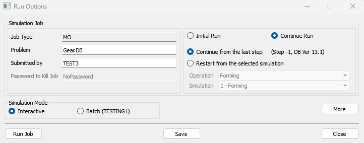
Run options multi processor settings
Observe the simulation graphics window and Simulation message tab to monitor the running job status as shown in Fig. STPL1.16.
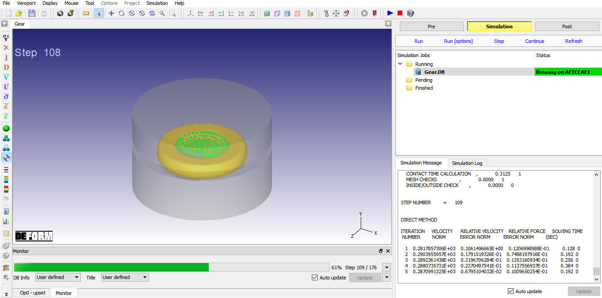
MO Simulation mode 3rd operation running status
For next lab 4 click on teh link Lab 4. 3D Non-isothermal Air transfer operation.